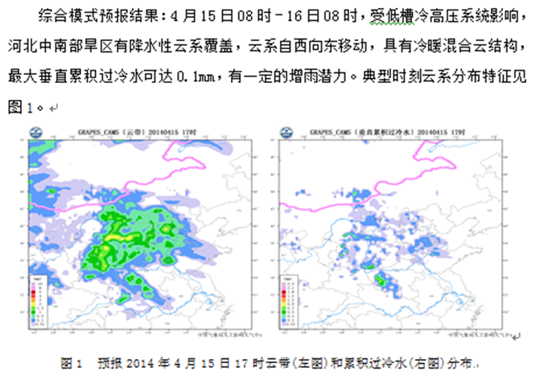
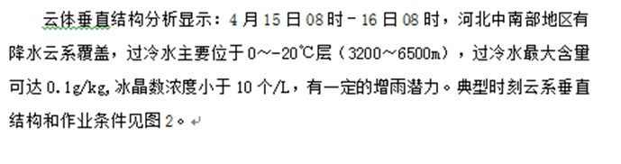
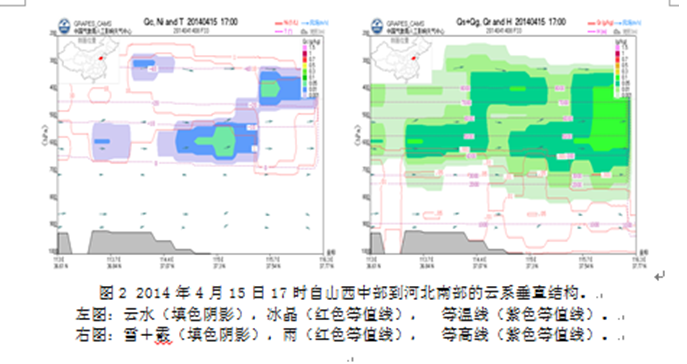
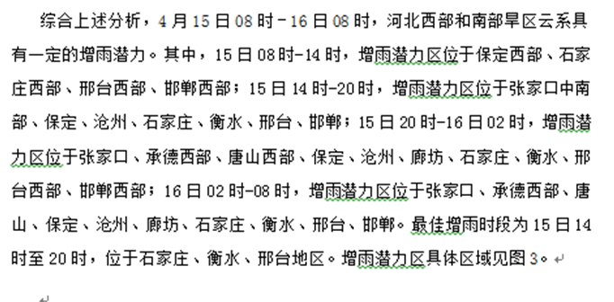
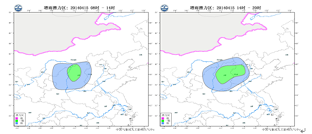
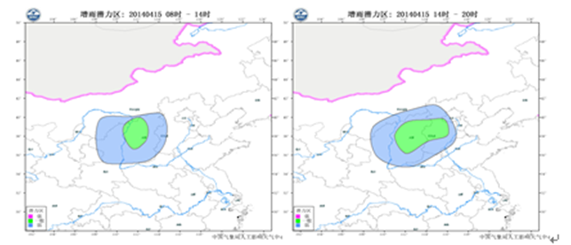
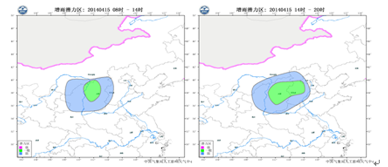
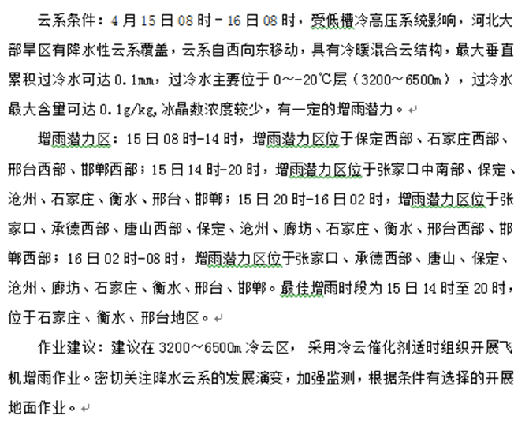
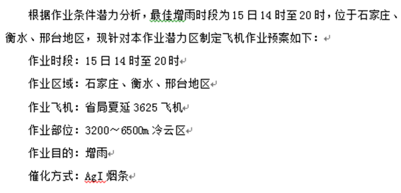

人影作业条件潜力预报和作业方案
201X年第 X期
广东省人工影响天气中心 201X年XX月XX日XX时
一、云系特征及演变预报

这一段文字部分参考作业过程预报和最新的短期预报结论，加上值班人员对人影模式产品的分析 配图1用 GRAPES_CAMS 模式的 本地化云带产品或GRAPES中尺度总云量图 配图2用GRAPES_CAMS 模式的 垂直累积过冷水含量（冷云催化作业 ）或垂直累积液态水含量（暖云催化）
二、云垂直结构和作业条件分析预报


配图用GRAPES_CAMS的两种云垂直结构产品。系统上要实现固定纬度和任意剖功能。文字部分留模板，由值班人员手动修改。
三、增雨潜力区预报

 


配图用ECMWF细网格的3小时降水预报。文字部分留模板，由值班人员手动修改。
四、预报结论

文字内容留模板，值班人员手动修改。
五、飞机作业预案

文字内容留模板，值班人员手动修改。
五、火箭作业预案
根据作业条件潜力分析，最佳增雨时段为28日17时至29日20时，位于粤东、粤北大部地区，现针对本作业潜力区制定地面火箭作业预案如下：
作业时段：28日17时至29日20时
作业区域：粤东、粤北地区四个作业点（梅州市丰顺县附城镇八角塘441423042、河源市龙川县老隆镇新观测场441622043、惠州市博罗县罗阳镇承粮陂村441322042、清远市英德锦潭水库441881050）
作业方式：地面火箭作业
作业部位：4000~6500m冷云区
作业目的：消雨
催化方式：AgI
文字内容留模板，值班人员手动修改。